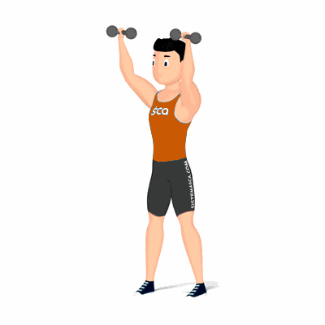

Desenvolvimento com Halter

Exercício para fortalecimento e hipertrofia dos músculos da região dos ombros. Realiza em pé, exige que o praticante possua músculos auxiliares fortalecidos, tais como: admonais, lombares, tríceps, trapézio e peitoral superior.
Ficha Técnica
Tipo: Musculação
Grupo Muscular: Ombro
Aparelho: Nenhum
Músculos: Nenhum
Como realizar
- Pegue dois halteres com as palmas das mãos voltadas para frente;
- Cabeça e costas alinhadas, joelhos semiflexionados, pés separados;
- Suba os pesos até a altura do pescoço flexionados os cotovelos, ao lado do corpo, com os antebraços na posição vertical;
- Com a força dos músculos dos ombros, empurre os halteres para cima até que os cotovelos fiquem estendidos;
- No ponto máximo dos movimentos os halteres deverão ficar próximos, retorne à posição inicial de forma controlada;
- Repita os movimentos, conforme o número repetições orientado pelo professor.
 RC STORE
RC STORE